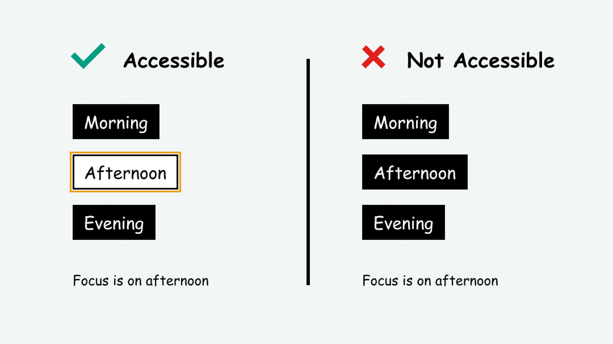

Milestone 2
Part B: Analysis of Existing Solutions
As discussed, the problem of our study was the readability of the toolbar at the top of the Piazza website i.e. color differentiation, text-understanding, and identification.
These problems are issues that have occurred previously on other web-pages or UI related applications.
In resolving these issues, there are now existing solutions, products, and services.
Exisiting Solutions:
An online loan application explains that green buttons advance in the process and red buttons cancel the process. A form contains a green button containing the text Go. The instructions say "Press the button labeled Go to submit your results and proceed to the next step."
Solution: Information conveyed in color or through icon is also available in text
Pro: People who have difficulty identifying an icon's purpose because of difficulty in seeing color or icon details are able to read the purpose through text.
Con: Too much text on a screen might make UI appear cluttered
(Microsoft Silverlight, versions 3 and greater) Using a browser that supports Silverlight, open an HTML page that references a Silverlight application through an object tag.
Check for a control that indicates it will change the application's appearance to use a high-contrast theme. Activate the control.
Check that the Silverlight application's user interface color themes change to an appearance that uses at least a 4.5:1 contrast ratio.
Solution: Sets high contrast colors for people with seeing disabilities
Pro: Control option to switch to high contrast is accessibility friendly.
Con: Needs a third party application to use the accessibility
A web page has a dark background color and light text and links. When focus lands on a link, the link is outlined with a bright yellow line, 3 pixels wide. Check that the change of contrast of the indicator between focused and unfocused states has a ratio of 3:1 or more for the minimum focus indicator area.
Solution: Ensure component has a visible focus indicator
Pro: Better design planning of 3:1 ratio for contrast allows prevention of issues in differentiating colors.
Con: You have to enter the redesign process, if your web--page doesn't already follow the rule of this solution.

TPGi’s free color contrast checker tool that allows you to easily determine the contrast ratio of two colors simply using an eyedrop tool. The CCA enables you to optimize your content–including text and visual elements–for individuals with vision disabilities like color-blindness and low-vision impairments.
Solution: Many websites that will check the color contrast for websites and tell you if it is hard to read for people with disabilities/tell you if it is not accessible to all.
Pro: Already designed testing that allows you to see if your UI is accessible to all.
Con: Checking post design and you have to use a third party application.
A certain solution that is popular in general would be a high-contrast theme to make color distinction easier to see.
As seen in the previously discussed solutions, many applications make sure to check for high-contrasting themes.
Piazza doesn’t offer this as the themes you are able to select from are light in color contrasting to its white text.
You can see through a variety of toolbars from different and consistently used websites that a high contrast theme is important.
For example, the Amazon web toolbar has a dark navy blue color to contrast from its white text along with pops of vibrant colors easy to differentiate.
Guidelines and Principles:
These solutions, products, and services adhere to the following principle of the WCAG 2 Layers of Guidance
Perceivable - Information and user interface components must be presentable
to users in ways they can perceive.This means that users must be able to perceive the information being
presented (it can't be invisible to all of their senses)
Guidelines that serve users:
The above guidelines and principles also serve our users.
We discussed how the problem is specifically for those with disabilities such as dyslexia, Irlen Syndrome, light sensitivity, and autism because it does not allow for easy access for those who struggle with reading small text, can not differentiate between colors, and those who are sensitive to overstimulation.
The guidelines above are able to explicitly provide accessibility to those affected by the problem.